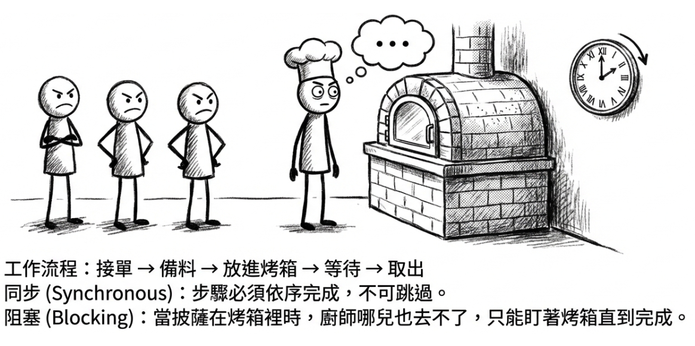
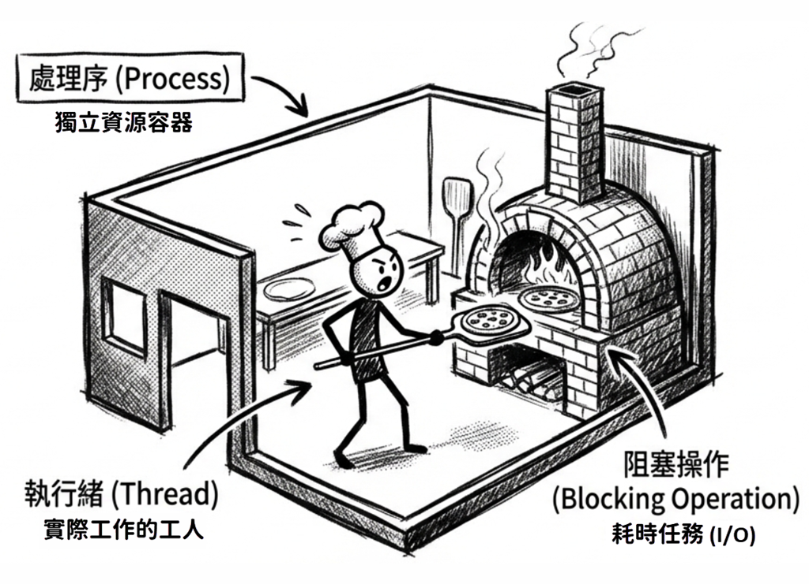
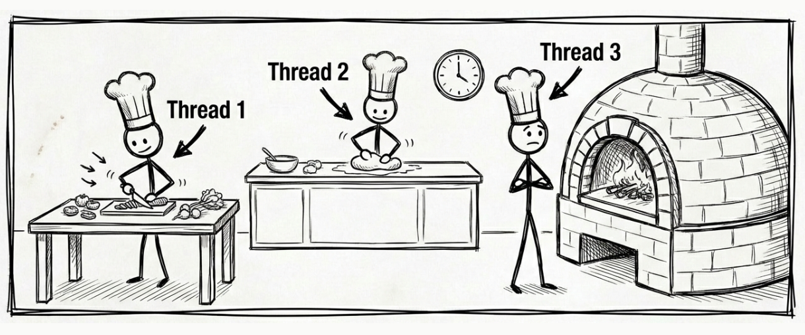
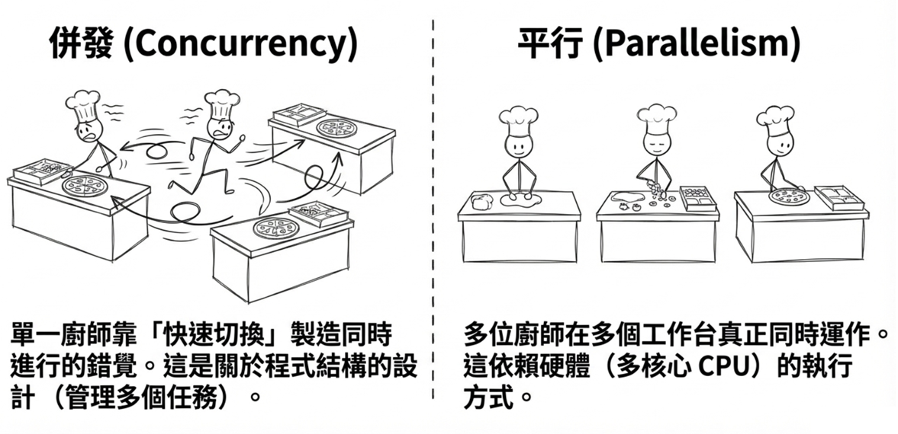
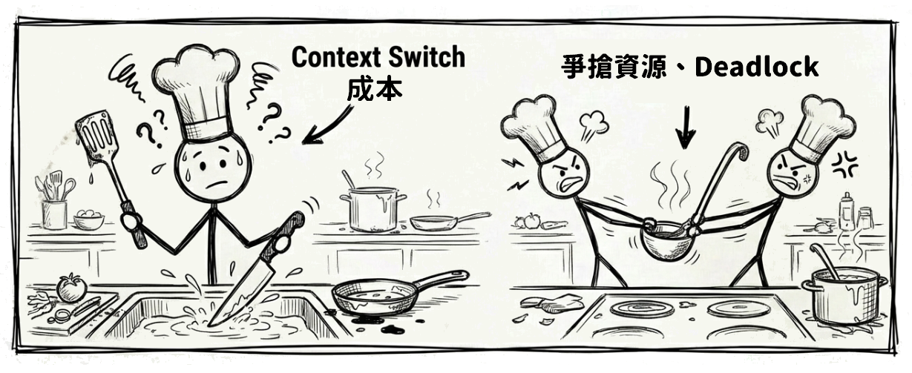
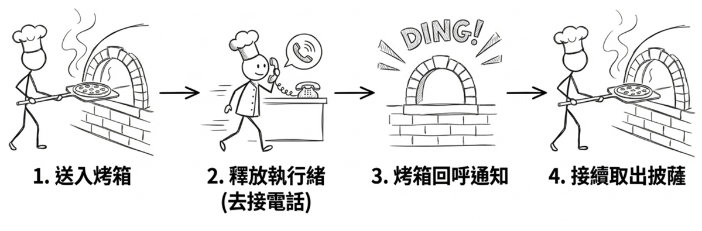
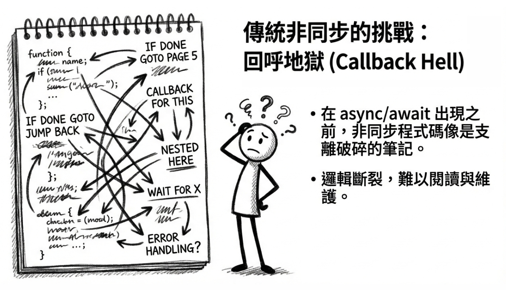
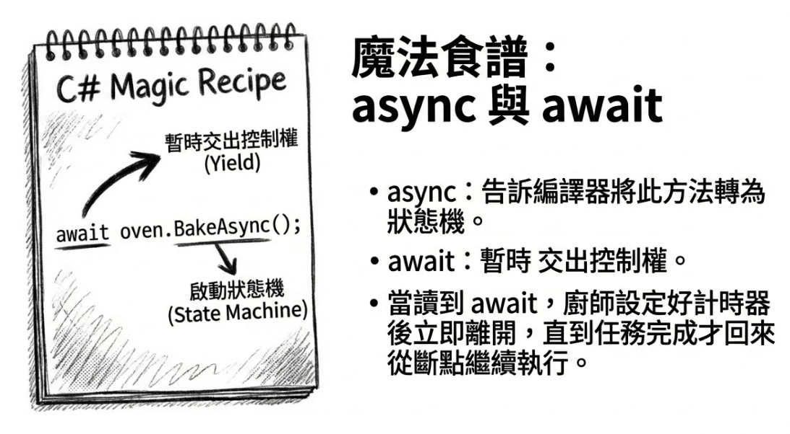
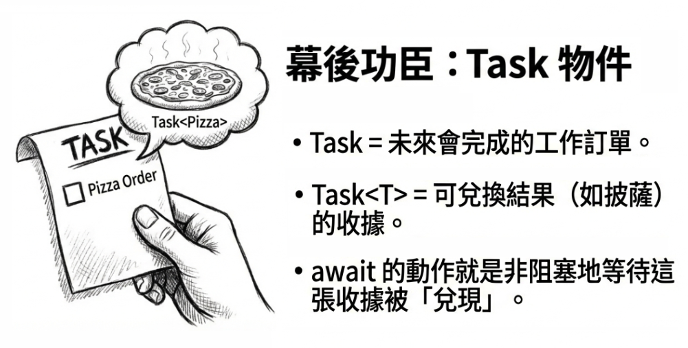

第 1 章：理解執行緒與非同步
第一章會先用通俗易懂的方式展開。無論你之前有沒有接觸過執行緒和非同步程式設計，讀完這一章，都能先掌握一套清楚的核心概念，作為後續章節的基礎。
為何程式需要同時處理多件事？
你是否曾經遇過這種情況：在桌面應用程式中按下一個按鈕後，整個視窗變成一片空白，滑鼠游標一直轉圈圈，完全無法操作？或者，在瀏覽某個熱門購物網站時，網頁載入速度極慢，甚至直接顯示逾時錯誤？
這些惱人的體驗，往往指向同一個核心問題：軟體沒有有效地處理「等待」。無論是等待檔案儲存、等待網路回應，或是等待資料庫查詢結果，這些等待如果處理不當，就會導致程式卡頓，使用者體驗變差。
在數位時代，我們期待應用程式能提供即時回饋與流暢體驗。無論是讓桌面應用程式的使用者介面（UI）保持靈敏，還是讓網站伺服器同時服務成千上萬名使用者，背後都仰賴同一種能力：同時處理多項任務。若缺乏這種能力，應用程式的反應就會變得遲鈍，使用者體驗大打折扣，伺服器也無法應付現代網路的龐大流量。
為了更具體瞭解這項能力，我們先用一間披薩店當作類比。請想像我們要一起經營這家店，從最原始的營運模式出發，逐步探索如何提升效率。沿著這條路走下去，我們自然會碰到 C# 程式設計中的兩個核心概念：多執行緒（multithreading） 和 非同步程式設計（asynchronous programming）。
本章學習路徑
接下來，我們會用披薩店的類比依序看三種模式：
- 模式一：同步的單一廚師；我們將從最基本的單執行緒模式開始，了解其運作方式與效率瓶頸。
- 模式二：引進更多人手；接著探索多執行緒如何改善效率，以及它所帶來的新挑戰。
- 模式三：超級高效的廚師；最後揭曉非同步程式設計的威力，以及 C# 如何透過
async/await讓這一切變得自然又簡單。
準備好了之後，我們就從這家披薩店最原始的經營模式開始，看看第一位廚師是如何工作的。
模式一：同步的單一廚師
關鍵概念： 單執行緒、阻塞
在披薩店剛開始營運時，店裡只有一位廚師。這位廚師就等同於程式世界中的 執行緒（thread），也就是執行所有工作的唯一單位。他的工作流程非常簡單：接到訂單、準備餅皮、放上配料、送入烤箱，然後等披薩烤好再取出。
這個模式被稱為 同步單一執行緒（synchronous single-threading）。這裡「同步」的意思是：所有步驟都必須依序完成，一步接著一步。關鍵問題出在「等待」：當廚師把披薩放進烤箱後，他哪兒也去不了，只能站在原地盯著烤箱，直到計時器響起。在這段時間裡，他完全無法處理新訂單，也不能先準備下一個披薩。

光用文字描述，可能不太有感。下面這段程式會把流程具體跑一遍，讓你直接看見單一廚師（單一執行緒）的工作方式：
// 模式一：同步的單一廚師 (Synchronous Single-Threading)
// 負責展示單執行緒阻塞的現象
using System.Diagnostics;
Console.WriteLine("披薩店開始營業！模式一：只有一位廚師 (單執行緒)");
var sw = Stopwatch.StartNew();
// 模擬依序製作三個披薩
MakePizza(1);
MakePizza(2);
MakePizza(3);
sw.Stop();
Console.WriteLine($"披薩全做好了，耗時: {sw.ElapsedMilliseconds} 毫秒");
void MakePizza(int id)
{
Console.WriteLine($"[單一廚師] 開始準備第 {id} 份披薩的餅皮...");
Thread.Sleep(500); // 模擬切菜和揉麵的準備時間
Console.WriteLine($"[單一廚師] 第 {id} 份披薩進烤箱，開始等候...");
// 這裡使用 Thread.Sleep 來模擬「阻塞操作 (blocking operation)」
// 廚師只能乾等，無法準備下一份，也不能接聽電話
Thread.Sleep(2000);
Console.WriteLine($"[單一廚師] 第 {id} 份披薩烤好了！取出披薩。");
}執行結果（輸出與耗時可能會依執行環境略有不同）：
原始碼： DemoSingleThread
核心概念
在繼續之前，先整理前面出現的幾個核心概念：
| 術語 | 對應到披薩店的比喻 |
|---|---|
| 執行緒（thread） | 我們的廚師。在基本的程式中，預設只有一位廚師，一次只能做一件事。可以把它理解成作業系統排程並執行程式碼的最小單位。 |
| 處理序（process） | 整家披薩店。它是應用程式的總稱，包含了廚師（執行緒）、烤箱、食材等所有資源的集合。在作業系統中，處理序是隔離應用程式的基本單位，它擁有獨立的記憶體空間，確保各應用程式之間不會互相干擾。 |
| 同步（synchronous） | 在這段流程中，廚師必須等目前這一步完成後，才能繼續下一步；也就是說，呼叫端會被目前的工作綁住，無法先往後推進。 |
| 阻塞操作（blocking operation） | 將披薩放入烤箱烘烤。在這個過程中，廚師（執行緒）被「阻塞」了，無法去做其他任何事，只能等待。這在程式中相當於讀取檔案、請求網路資料等需要花時間等待外部資源的耗時操作。 |
如果處理序（process）與執行緒（thread）這兩個術語對你來說還有點抽象，可以先用下面這種方式來理解：
- 處理序 (process) 是應用程式的「容器」（或沙盒），它擁有獨立的記憶體空間和系統資源，確保應用程式之間不會互相干擾。
- 執行緒 (thread) 則是容器中實際負責執行程式碼的「工人」。
一個處理序至少會有一位工人，也就是主執行緒。但如果要同時處理多項工作，同一個處理序也可以擁有多位工人，也就是多執行緒。這些工人共享同一個容器內的資源，例如記憶體；也正因如此，多執行緒程式設計才需要特別注意資源競爭的問題。

效率瓶頸：等待的代價
模式一最大的問題是：等待會把執行緒綁住。在這個比喻裡，廚師代表的是執行緒，而真正執行運算的是背後的 CPU。當廚師只是站在烤箱前等待時，那條執行緒就無法去推進其他工作；烤箱雖然努力工作著，整體流程卻依然卡在原地。
這個流程簡單、容易理解，但效率非常低。想像一下，尖峰時段顧客大排長龍，我們的廚師卻因為正在等一個披薩烘烤，完全無法接受新訂單。放到軟體世界裡，這就是單執行緒阻塞模型最典型的效能瓶頸。
程式碼中的「阻塞」範例
接著來看程式碼中的「阻塞」是什麼樣子。
以桌面應用程式（如 WinForms、WPF）為例。這類程式通常只有一條「UI 執行緒」，負責處理所有使用者操作，例如點擊按鈕、移動視窗等等。一旦我們在這條執行緒上執行耗時操作，整個程式看起來就會像「當掉」一樣。下面這段常見的 Windows 桌面 UI 事件處理器，示範的就是這種情況：
既然等待這麼浪費時間，一個自然的想法就是：能不能讓廚師在等待的期間去做點別的事？這就帶我們進入模式二。
模式二：引進更多人手
關鍵概念： 多執行緒與併發（concurrency）
為了處理這種等待造成的低效率，我們替廚房引進了新的運作模式：多執行緒（multithreading）。背後的想法很直觀：與其讓一位廚師乾等到整個廚房都卡住，不如安排更多廚師分工，讓某些工作在等待時，其他工作仍然有人可以繼續推進。
這確實是很常見的思路。不過，這裡先記住一件事：如果等待的本質是檔案、網路或資料庫這類 I/O 操作，現代 .NET 通常更傾向使用非同步 I/O，而不是為每一個等待中的工作綁定一條額外執行緒。這一節先把多執行緒的基本觀念建立起來，下一節再來看更適合 I/O 等待的作法。
先看最容易理解的情況。在只有單一 CPU 核心（core）的電腦上，這就像是我們請了多位廚師，但廚房裡只有一個工作台。這些廚師必須頻繁地輪流使用工作台來做事。從外部看起來像是在「同時」處理多張訂單，但實際上在任何一個瞬間，只有一位廚師佔用工作台，靠著快速切換形成同時進行的「錯覺」。
如果換成擁有多個 CPU 核心的現代電腦，情況就更進一步了。這相當於廚房裡有多個工作台，因此多位廚師可以同時在各自的工作台上製作披薩，實現真正的平行處理（parallelism）。

併發 vs. 平行
在繼續往下看程式碼之前，有個很容易混在一起的觀念值得先釐清：「併發」和「平行」並不是同一件事。
- 併發（concurrency）：指管理多個任務的能力。就像披薩店中只有一位廚師在多張訂單之間來回切換；前提是等待期間他能先去處理別的事，而不是被卡在原地。任務在時間上是重疊的，但不一定在同一時刻被執行。這主要跟結構的設計有關。
- 平行（parallelism）：指同時執行多個任務。在電腦世界裡，這需要多個 CPU 核心來實現。在我們的披薩店裡，這相當於我們真的多請了幾位廚師（多個執行緒），每個人都在自己的工作台（多個 CPU 核心）上同時製作披薩。這主要是跟執行的方式有關。
多執行緒既能實現單核心上的併發（concurrency），也能利用多核心實現平行（parallelism）。

有了這個區別之後，再來看程式碼就會順很多。下面這個範例展示的，就是多位廚師（多執行緒）的工作流程：
// 模式二：更靈活的多工廚師 (Multithreading)
// 負責展示多執行緒併發處理的現象
using System.Diagnostics;
Console.WriteLine("披薩店開始營業！模式二：多位廚師 (多執行緒)");
var sw = Stopwatch.StartNew();
// 建立三個獨立的執行緒（分別代表三位不同的廚師）
Thread chef1 = new Thread(() => MakePizza(1));
Thread chef2 = new Thread(() => MakePizza(2));
Thread chef3 = new Thread(() => MakePizza(3));
// 讓所有廚師同時開始工作
chef1.Start();
chef2.Start();
chef3.Start();
// 主執行緒（餐廳經理）等待所有廚師完成工作
chef1.Join();
chef2.Join();
chef3.Join();
sw.Stop();
Console.WriteLine($"披薩全做好了，耗時: {sw.ElapsedMilliseconds} 毫秒");
void MakePizza(int id)
{
int threadId = Environment.CurrentManagedThreadId;
Console.WriteLine($"[廚師 {threadId}] 開始準備第 {id} 份披薩...");
Thread.Sleep(500); // 模擬切菜和揉麵的準備時間
Console.WriteLine($"[廚師 {threadId}] 披薩 {id} 進烤箱，開始等候...");
// Thread.Sleep 是阻塞操作，但因為每個披薩都有專屬的廚師（執行緒），
// 某位廚師等待時，其他廚師仍可處理自己的披薩。
Thread.Sleep(2000);
Console.WriteLine($"[廚師 {threadId}] 第 {id} 份披薩烤好了，取出。");
}Note
這裡刻意用
new Thread(...)來示範，是為了方便理解和對照前後兩個模式。實務上，現代 .NET 更常用的是Task、Task Parallel Library（TPL）或框架提供的背景工作機制，而不是每次都手動建立Thread。原因是每個Thread物件都會佔用一些記憶體（約 1MB ）；若需要執行成千上萬個短期任務，手動建立執行緒會迅速耗盡系統資源。Task則是輕量化的包裝，搭配執行緒池可以重複使用執行緒，大幅降低記憶體開銷。
執行結果（輸出順序、Thread ID 與耗時都可能會依執行環境與排程而略有不同）：
原始碼： DemoMultiThread
多執行緒的利與弊
這種模式確實帶來了顯著改善，但也同時引入了新的複雜性。在這個範例裡，它最直接的優點是縮短整體完成時間。雖然每位廚師在 Thread.Sleep 期間仍然被阻塞，但因為我們同時派出多位廚師，所以三個披薩的等待可以重疊，總耗時因此下降。若工作本身是 CPU 密集型，而且機器也有多個 CPU 核心，多執行緒便可進一步提升 CPU 利用率與整體吞吐量（提升整體出餐效率）。
缺點則有：
context switch的開銷：廚師在不同任務間切換並不是零成本。他得先放下處理 A 披薩的工具、洗手，再拿起處理 B 披薩的工具。這個「切換」本身就會消耗時間和精力。在程式中，作業系統切換執行緒也需要保存當前狀態、載入新狀態，這同樣會帶來效能開銷。- 資源同步問題（synchronization issues）：例如，多位廚師如果想同時使用唯一的一把醬料勺，就會發生衝突。這在程式中會引發 競爭狀況（race conditions）。更麻煩的是，還可能發生 死結（deadlocks）。想像一下，廚師 A 拿了唯一的醬料勺，正在等待廚師 B 用完唯一的起司刨絲器；但同時，廚師 B 卻拿著刨絲器，正在等待廚師 A 交出醬料勺。兩位廚師都卡住了，互相等著對方，程式也就跟著完全卡死。

執行緒的隱性成本
在 .NET 的記憶體回收過程中，某些階段會需要暫停受控執行緒（managed threads）；執行緒越多，協調與恢復的成本通常也越高。不過，這並不表示每一次 GC 都會從頭到尾完全停住所有執行緒：現代 .NET 的 background GC 會讓應用程式執行緒在大部分時間繼續執行，只在特定階段短暫暫停。同樣地，除錯器在命中中斷點時，也往往會暫停該應用程式的其他執行緒，直到你繼續執行。
參閱微軟文件：Garbage collection and performance、Background garbage collection
多執行緒雖然提升了效率，但管理也更複雜。接著來看另一種更適合等待場景的方式：讓廚師不用這麼手忙腳亂，同時又能充分利用等待的時間。
模式三：超級高效的廚師
關鍵概念： 非同步程式設計
現在，披薩店迎來了一位更聰明的「超級廚師」，而他的工作模式就和 非同步程式設計（asynchronous programming） 極為相似。
當這位廚師把披薩放進烤箱後，他既不是原地等待，也不是立刻轉身去做另一個披薩。他做了另一種選擇：把「烤披薩」這件耗時的工作完全委託給烤箱，然後徹底釋放自己，去做不同類型的事情，例如到前台接聽電話訂單或服務顧客。他之所以能這麼做，是因為烤箱被設定成烤好後會自動發出「叮」的一聲，也就是 回呼通知（callback）。等他聽到通知聲，再暫停手邊的工作，回來處理烤好的披薩就行了。

下面的範例會展示這位超級廚師（非同步）的工作方式。
Note
在以下範例中，你會先看見
async、await和Task這些陌生的關鍵字。先別擔心，也不用急著弄懂每個細節。這一輪請先專注觀察：等待期間，執行緒（廚師）是不是真的被釋放了。也先記住一點：async/await擅長的是在「等待 I/O」時不阻塞執行緒，而不是把 CPU 工作自動變快。另外，呼叫
async方法時，方法本體會先在目前執行緒上一路跑到第一個尚未完成的await。所以它不等於「一呼叫就自動開新執行緒」；真正的重點是遇到等待時，先把執行緒還回去，等之後再接著執行。
// 模式三：超級高效的智慧廚師 (Asynchronous Programming)
// 負責展示使用 async/await 釋放執行緒，達成非阻塞的等待
using System.Diagnostics;
var msg = "披薩店開始營業！模式三：超級廚師搭配智慧烤箱 (非同步程式設計)";
Console.WriteLine(msg);
var sw = Stopwatch.StartNew();
// 啟動三個非同步的披薩製作任務（它們會併發執行非同步邏輯）
// 注意：呼叫 async 方法時，會先在目前執行緒上執行，
// 直到遇到第一個尚未完成的 await。
// 它不會一開始就自動切到新的背景執行緒。
var p1 = MakePizzaAsync(1);
var p2 = MakePizzaAsync(2);
var p3 = MakePizzaAsync(3);
// 非同步等待所有披薩任務完成
await Task.WhenAll(p1, p2, p3);
sw.Stop();
msg = $"披薩全做好了，耗時: {sw.ElapsedMilliseconds} 毫秒";
Console.WriteLine(msg);
async Task MakePizzaAsync(int id)
{
// 獲取目前執行緒的 ID，觀察非同步的執行緒變化
int threadId = Environment.CurrentManagedThreadId;
var str = $"[廚師 {threadId}] 開始處理第 {id} 份披薩，" +
"先等麵糰醒發...";
Console.WriteLine(str);
// 模擬可非同步等待的前置時間，例如等麵糰醒發
// 或配料送達；這不會阻塞執行緒。
await Task.Delay(500);
threadId = Environment.CurrentManagedThreadId;
str = $"[廚師 {threadId}] 麵糰好了，第 {id} 份進烤箱；" +
"設好計時器後先去忙別的！";
Console.WriteLine(str);
// 模擬需要等待外部回應的耗時操作：烤箱烘烤。
// await 期間，執行緒不會被阻塞，系統可以將該執行緒派去處理
// 其他任務，直到烤箱時間到了再由系統安排繼續執行下一行程式。
await Task.Delay(2000);
threadId = Environment.CurrentManagedThreadId;
str = $"[廚師 {threadId}] 「叮！」第 {id} 份披薩烤好了，回來取出。";
Console.WriteLine(str);
}這裡有一點值得留意：我們用 Task.Delay 來模擬需要等待外部回應的耗時操作，例如烤箱烘烤。在電腦世界裡，你可以把它想成網路連線、讀寫檔案等 I/O 操作。不過，Task.Delay 本身是計時器延遲，並未涉及 I/O 工作；這裡只是用它來模擬非同步等待的情形，不等同真實 I/O。
原始碼： DemoAsyncAwait
底下是此範例的執行結果（輸出順序、Thread ID 與耗時都可能會依執行環境與排程而略有不同）：
披薩店開始營業！模式三：超級廚師搭配智慧烤箱 (非同步程式設計)
[廚師 2] 開始處理第 1 份披薩，先等麵糰醒發...
[廚師 2] 開始處理第 2 份披薩，先等麵糰醒發...
[廚師 2] 開始處理第 3 份披薩，先等麵糰醒發...
[廚師 5] 麵糰好了，第 3 份進烤箱；設好計時器後先去忙別的！
[廚師 7] 麵糰好了，第 1 份進烤箱；設好計時器後先去忙別的！
[廚師 8] 麵糰好了，第 2 份進烤箱；設好計時器後先去忙別的！
[廚師 7] 「叮！」第 1 份披薩烤好了，回來取出。
[廚師 5] 「叮！」第 2 份披薩烤好了，回來取出。
[廚師 8] 「叮！」第 3 份披薩烤好了，回來取出。
披薩全做好了，耗時: 2530 毫秒為什麼廚師編號會變來變去？
仔細觀察上面的執行結果，你會發現同一個披薩在不同階段，負責處理的廚師編號（執行緒 ID）改變了！例如第 1 份披薩原本是 2 號廚師開始處理，等待麵糰醒發後，卻變成 7 號廚師接手將它放進烤箱。
反過來也一樣：同一位廚師在不同 await 之後，接手的披薩也可能不同。例如範例中廚師 5 負責把第 3 份披薩送入烤箱，等烤箱響起「叮！」時，接手取出披薩的卻是第 2 份，兩者對調了。這是因為每一段等待之後要接著執行的工作，都會被視為獨立的排程單位。執行緒池只看「誰有空、哪段後續工作已就緒」，並不會記得「這條執行緒剛才做的是哪一份披薩」。
進一步說，在主控台應用程式（Console App） 中，方法執行到 await 處（例如等待麵糰或烤箱時）會先暫停，並把控制權交還出去，不再佔用目前那條執行緒。等到等待結束後，後續步驟通常會由執行緒池（ThreadPool）中 任何一條有空的執行緒 接手，也可能剛好仍是同一條。所以你有時會看到執行緒 ID 改變，有時則不會。這正是非同步有彈性的地方：工作不會綁死在特定一條執行緒上。如果是具有 UI 執行緒的桌面應用程式，其後續步驟通常會回到原本的 UI 同步環境（SynchronizationContext），因此看起來往往像是由同一位專屬廚師接手到底，這點我們會在後面的章節詳細探討。
非同步的關鍵：不阻塞執行緒
非同步與多執行緒最根本的區別，在於它們如何對待 執行緒（廚師）：
- 多執行緒（模式二）：在這個範例裡，每個披薩各自綁定一位廚師（執行緒）。即使等待烤箱時，那位廚師也仍被佔住；其他廚師可以繼續處理其他披薩，因此總時間縮短，但執行緒成本也跟著增加。
- 非同步（模式三）：廚師（執行緒）把披薩烘烤的任務交給烤箱後，就可以自由活動了。他可以先去處理別的工作；等烤箱發出「叮！」通知披薩烤好，再由執行階段（runtime）安排接續工作繼續往下跑。
換句話說，非同步模式是在更有效地利用廚師（執行緒）的時間。當執行緒遇到需要等待的 I/O 操作，例如檔案讀寫或網路請求時，它不會被「阻塞」在原地，而是可以被系統調度去處理其他任務。這樣一來，應用程式的吞吐量（throughput）和反應速度通常都會更好。
不過，這裡有一個很重要的界線要先記住：所謂「釋放執行緒」，是指在等待 I/O 或計時器期間，不把執行緒佔住。若工作本身是實際的 CPU 計算，例如影像處理、加密或資料轉換，async/await 並不會憑空把它變成非阻塞。那類工作仍然需要佔用 CPU，只是通常會搭配 Task.Run、Parallel 或其他平行化工具來處理。
傳統非同步的挑戰：混亂的筆記本
關鍵概念： 回呼地獄（callback hell）
故事還沒結束。在 C# 的 async/await 語法出現之前，要實現這種高效的非同步模式其實非常困難。那就像要求我們的超級廚師隨身攜帶一本極其複雜的筆記本，上面寫滿各種「if … then …」的指令：
「如果電話響了，就記錄下訂單資訊，然後去看筆記本的第 5 頁。」 「如果烤箱響了，就放下電話，去取出披薩，然後去看筆記本的第 8 頁。」 「如果送餐員回來了，就……」
這種基於回呼（callback）的程式碼，邏輯流程會被分割得支離破碎，形成所謂的「回呼地獄（callback hell）」，導致程式碼難以閱讀、除錯和維護。

C# 後來提供了一本「魔法食譜」，讓這位超級廚師的工作流程終於能以清楚的方式呈現。接著就來看看這本食譜究竟有何魔法。
魔法食譜：async 與 await 的威力
為了解決「回呼地獄」帶來的混亂，C# 引入了 async 和 await 這兩個關鍵字。我們可以把它們想像成一本「魔法食譜」。有了這本食譜，廚師就能用看似簡單、線性的同步方式，去閱讀和執行複雜的非同步流程，等於正式告別了那本混亂的筆記本。
async 與 await 如何運作
接下來，我們把鏡頭拉近一點，看看這本魔法食譜最核心的兩個關鍵字：
async關鍵字- 比喻：這就像是在食譜的封面上標註「魔法食譜」。這個標記本身不會改變任何事，但它至關重要。
- 作用：它有兩個核心目的。第一，允許在方法內使用
await關鍵字。第二，它會指示編譯器將整個方法轉換為一個精密的狀態機（state machine），以便在幕後管理複雜的非同步流程。這涉及較底層的編譯器魔法，我們會在後續章節逐漸揭露相關細節。現階段只要先把它想像成一個會自動幫我們記住「目前做到哪一個步驟了」的機制即可。
await關鍵字- 比喻：這是魔法食譜中最關鍵的指令。當廚師讀到
await oven.BakeAsync()這一行時，他會先看看烤箱工作是否已完成。如果還沒完成，他就把控制權交還，先去做其他完全無關的工作，例如服務其他顧客，而不是站在原地傻等；如果工作其實已經完成，就能直接進入下一步。 - 作用：
await會先檢查它等待的工作是否已完成。若尚未完成，await不會阻塞目前執行緒，而是先暫停方法執行，並把方法剩餘的部分註冊為接續工作（continuation）。之後當工作完成時，編譯器為async方法產生的狀態機便能在適當時機恢復執行。若await等待的工作一開始就已完成，則會立即取得結果並繼續往下執行（不會暫停方法）。正因如此，非同步程式碼雖然看起來像同步寫法，卻能在等待非阻塞作業完成的期間避免卡住執行緒。
- 比喻：這是魔法食譜中最關鍵的指令。當廚師讀到

幕後功臣：Task 物件
在披薩店的比喻裡，await 等待的不是結果本身，而是一個代表未來會完成工作的 Task 物件：
Task的比喻：當廚師執行一個非同步操作時（如BakeAsync()），他不會立刻得到一個披薩，而是會得到一張「訂單收據」。這張收據就是Task物件，它代表一個「未來會完成的工作」（正式的術語叫做 future 或 promise）。Task<T>的比喻：如果這個工作完成後會返回一個結果（例如一個烤好的披薩），那麼廚師得到的就是一張可以兌換披薩的收據，這就是Task<Pizza>。await的作用：await的核心作用，就是非阻塞地等待這張「收據」被兌現。你可以把它想像成廚師把收據交給系統，然後轉身去做別的事。系統的「魔法」在於，當訂單完成時，它會輕拍廚師的肩膀，提醒他回到原本離開的地方繼續工作。如果等待的是一張Task<Pizza>收據，那麼await的過程，就是最終從收據中「拆開」並取出那個熱騰騰的Pizza。

現在，async/await 的輪廓應該比較清晰了。它讓我們能用同步、線性的方式來寫程式碼，同時享有非同步的好處：不阻塞執行緒、保持回應靈敏。這也是為什麼它在現代 C# 開發中幾乎無所不在。
總結：選擇最適合的模式
從只有一位廚師的簡陋小店，到運用智慧科技的高效餐廳，我們一路看見了一間披薩店，也就是應用程式，如何逐步演進。這裡用一張表格把這三種營運模式整理一下：
| 模式 | 廚師（執行緒）行為 | 複雜度 | 最佳應用場景 |
|---|---|---|---|
| 同步單執行緒 | 一次做一件事，死等烤箱。 | 極低 | 適合簡單任務。 |
| 多執行緒 | 多位廚師輪流使用工作台（單核心），或多位廚師同時在各自的工作台工作（多核心）。 | 高 | 適合 CPU 密集型計算 場景，需要利用多核心同時進行大量運算。 |
非同步（async/await） |
將烤披薩等耗時工作交給烤箱，自己去做別的事，等待通知。 | 低 | 適合 I/O 密集型操作，如網路請求、資料庫查詢、檔案讀寫等。 |
要提醒的是，這張表描述的是常見傾向，而不是放諸四海皆準的絕對規則。實務上，判斷的關鍵在於瓶頸是 CPU 密集還是 I/O 密集，以及是否需要避免占用目前的執行緒。事實上，CPU 密集型工作也可以在 async/await 框架中搭配 Task.Run 卸載到背景執行緒，這部分會在第 3 章進一步說明。
下一步
透過經營一家披薩店，我們逐步認識了最基本的阻塞模型，以及更高效的非同步模型。這一章最想先建立的觀念是：async/await 是現代 C# 開發者處理耗時操作，特別是 I/O 操作時重要且常用的工具。它通常不會讓 CPU 密集型工作憑空變快，但往往能在 I/O 等待期間提升應用程式的回應性與延展性，讓你的應用程式像那位「超級廚師」一樣，更自然、順暢地處理各種任務。
如果這個披薩店的類比有幫你把基礎觀念建立起來，那麼這一章的任務就達成了一大半。接下來，就能以此為起點，繼續探索更進階的主題，例如 Parallel 類別、PLINQ，以及更複雜的同步機制，逐步打造出真正高效、可靠的現代化應用程式。